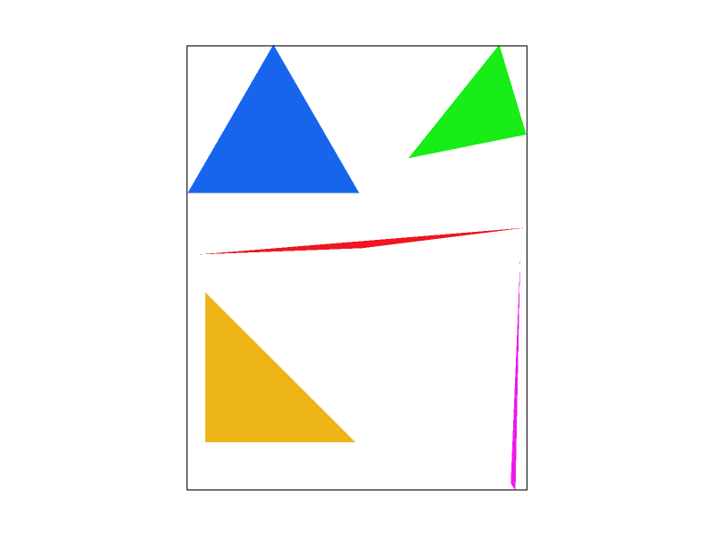
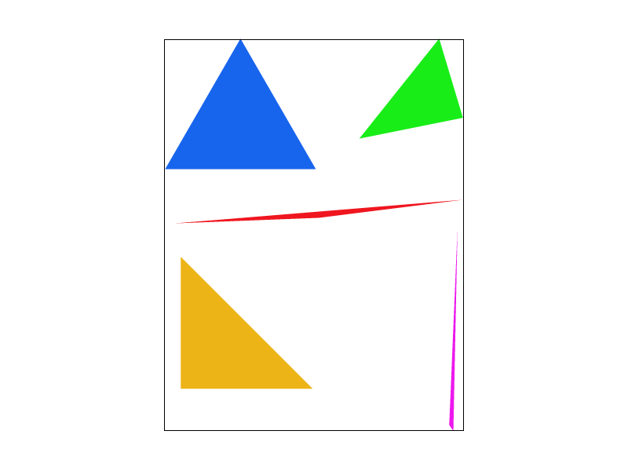
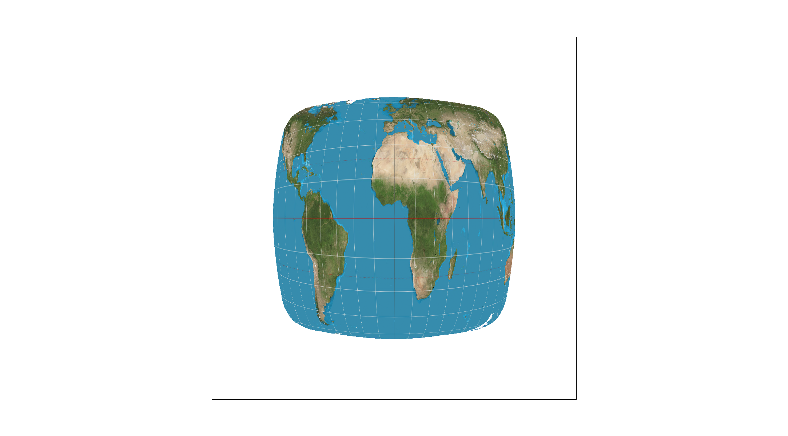
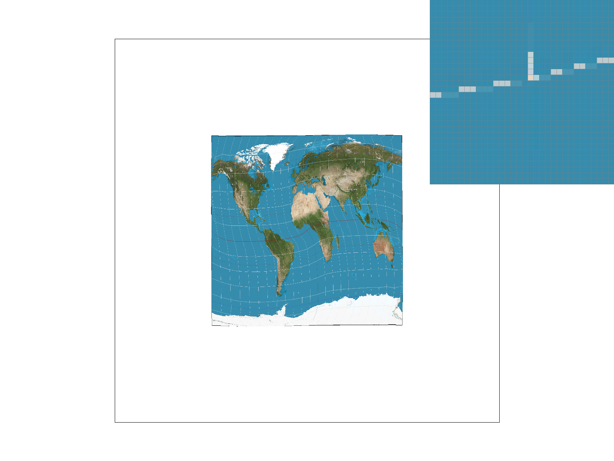
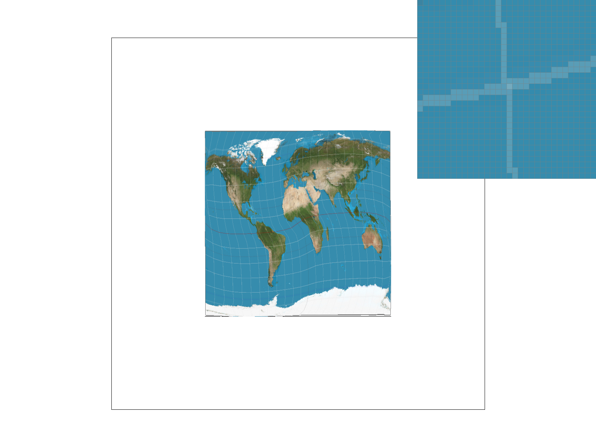
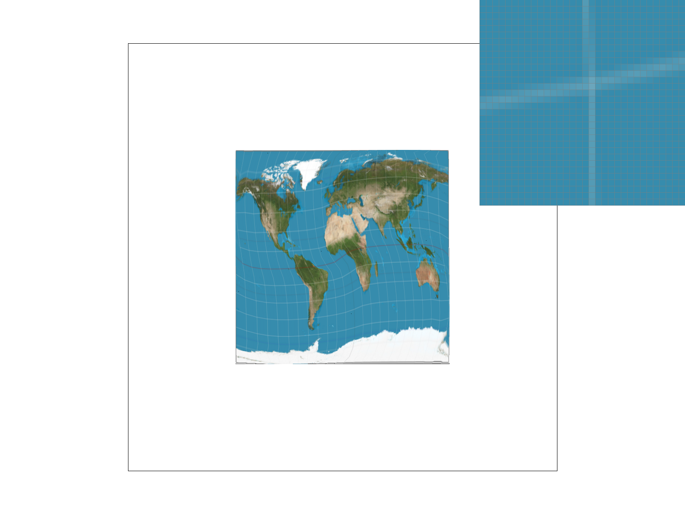

CS184/284A Spring 2025 Homework 1 Write-Up
Link to webpage: (TODO) cs184.eecs.berkeley.edu/sp25
Link to GitHub repository: (TODO) cs184.eecs.berkeley.edu/sp25
Overview
Give a high-level overview of what you implemented in this homework. Think about what you've built as a whole. Share your thoughts on what interesting things you've learned from completing the homework.Task 1: Drawing Single-Color Triangles
My triangle rasterization algorithm efficiently determines which pixels should be filled to represent a triangle on the screen. Without any optimization, I construct a bounding box by flooring the minimum (x, y)'s and ceiling the maximum (x, y)'s with which I use to construct my for loops. The bounding box approach ensures that only relevant pixels are checked, reducing unnecessary computations. Then I check the winding of my points by using the cross product. Next, I use the three line test to check if my sampled points (offset by 0.5 of course) are within my triangle. Finally, I run a few checks to make sure that my sampled points are within the bounds of the window (same way rasterize_point functions) and then use fill_pixel to rasterize the samped point. Here is an image of basic/test4.svg.I added std::chrono::high_resolution_clock::now(); to calculate the time taked for rasterizing each triangle. I moved all the math out from for loop to avoid repeat Repeat the calculations which help speed up a lot.

Task 2: Antialiasing by Supersampling
Supersampling is a technique used to reduce aliasing in rasterized images by increasing the number of samples taken per pixel. To implement supersampling, I utilized the provided sample rate to scale the sample_buffer vector. If the sample rate was 4, then the original 1000x1000 would be scaled to 4000x4000. Then each original pixel would have a corresponding 2x2 patch that is averaged to describe the original pixel in the end on the frame_buffer. This averaging was done in resolve_to_frame_buffer_() where each pixel on the frame_buffer is the average of the associated patch. Then, I made it so that fill_pixel is only used by rasterize_point and rasterize_line so that I can exclude them from supersampling. This also meant that I needed to adjust fill_pixel so that the corresponding patch to the pixels drawn for each point is filled with the appropriate color. Supersampling is not done for the lines.

|

|
|
|

|
Supersampling helps reduce aliasing artifacts that occur due to insufficient sampling resolution. With supersampling, The additional samples provide more accurate representation of the triangle's color. As the sample rate increases, the algorithm creates a smoother, more anti-aliased triangles
Task 3: Transforms
Task 4: Barycentric coordinates
Barycentric coordinates is a way to express any points inside a triangle as a weighted sum of its vertices where: α+β+γ=1. Using three weights, using three weights, one for each vertex. These weights determine how much influence each vertex has on the final position or color of the point inside the triangle.Point P inside the triangle is defined as: P=αA+βB+γC
If each vertex of a triangle has Red, Green, or Blue, barycentric coordinates allow smooth color blending across the triangle.
Task 5: "Pixel sampling" for texture mapping
Pixel sampling is a method used to determine the color of a pixel when mapping a texture onto a surface. tell us how we pick colors from a texture when mapping it to a surface.Nearest Neighbor
Nearest Neighbor is the simplest method. It takes the color of the closest texel (texture pixel) to the sample point. It is fast but can cause aliasing artifacts, especially when zooming in.
Bilinear
Bilinear sampling interpolates between the four closest texels to smooth the transition between them. It produces a smoother image and reduces artifacts but requires more computations, making it slower.

|
|
|

|
|
In this image, it is evident that "bilinear sampling at 1 sample per pixel" performs better than "nearest sampling at 1 sample per pixel." In the nearest sampling version, there are still blurred and broken lines, whereas in the bilinear version, all lines appear continuous, though some areas remain slightly rough. Since nearest sampling does not blend colors, it results in broken or aliased edges, whereas bilinear filtering can produce a smoother appearance. The difference is less noticeable in the comparison with 16 samples per pixel because the increased sampling significantly reduces artifacts in both methods
Task 6: "Level Sampling" with mipmaps for texture mapping
Level sampling helps improve texture mapping by selecting which mipmap (pre-scaled texture) to use. Instead of always using the highest-resolution texture, level sampling chooses a lower-resolution mipmap when the texture is farther away.
- L_ZERO: Always samples from the highest-resolution mipmap (level 0).
- L_NEAREST: Selects the mipmap level closest to the required scale factor.
- L_LINEAR: Interpolates between two mipmap levels for smoother transitions.
In rasterize_textured_triangle, I calculated arycentric coordinates
for points (x, y), (x+1, y), and (x, y+1), then stored them in
the SampleParams struct.
In Texture::get_level I computed the differences between (u, v) values,
then scaled them by the texture size. Finally, I computed: mipmap_level = log2(L)
|

|

|
|

|

|